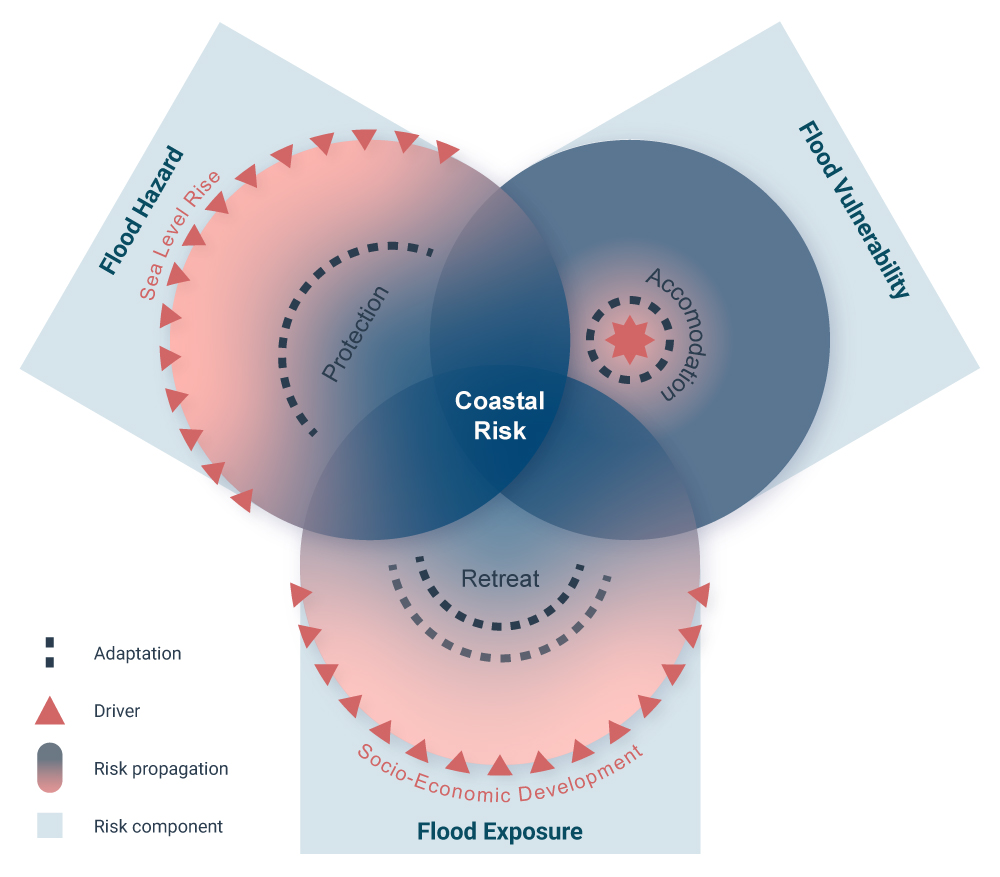

About
DIVACoast.jl is a Julia library for coastal impact and adaptation modelling. The library provides data types and algorithms to quickly script assessments for different coastal impact and adaptation research questions. DIVACoast.jl is provided by the Global Climate Forum via GitHub.
Getting Started
Ensure you have Julia installed on your system. You can download Julia from the official julia website. DIVACoast is currently under Development you can install the latest (unstable) version from GitHub.
using Pkg
Pkg.add(url = "https://github.com/globalclimateforum/DIVACoast.jl")
using DIVACoastConcept
The key concept of DIVACoast.jl is the concept of risk. Following the definition of the Intergovernmental Panel on Climate Change (IPCC), risk constituted by the three components of hazard, exposure and vulnerability (Oppenheimer et al., 2019; Wong et al., 2014). While on the long run the package is meant to serve multiple coastal risks including the risk of flooding, erosion, salinity intrusion and wetland change, the current release concentrates on flood risk.
Flood Risk

Coastal flood risk assessment involves at least the following five components:
Sea-level hazard, including mean sea-levels (MSL) and extreme sea-levels (ESL) from tides, surges, waves, river run-off and their interactions.
Hazard propagation, which refers to the transformation of the sea-level hazard to the flood hazard. This includes the propagation of mean and extreme sea-level onto the shore and the floodplain, including their interaction with natural (e.g., dunes) and artificial (e.g., dikes) defences.
Flood hazard, refers to the flood characteristics found at a specific flooded location. Currently
DIVACoast.jlis limited to the characteristic of maximum water depth.Flood exposure in terms of area, people and coastal assets potentially threatened by these hazards.
Flood vulnerability, which refers to the propensity of the exposure to be adversely affected by the flood hazard (IPCC, 2014b).
These components together form the basis for assessing coastal flood risk, and provide a structured approach to analyze how hazards, exposure, and vulnerability interact. The following table summarizes how different processes—such as drivers and adaptation strategies—can influence these risk components:
| Process | Interaction |
|---|---|
| Drivers | |
| Sea-Level rise | changes the hazard |
| Socio-Economic development | changes Exposure & Vulnerability |
| Adaptation | |
| Protection | affects the hazard propagation |
| Retreat | reduces exposure |
| Accommodate | reduces vulnerability |
In the following sections you will find a broad "toolset" for modeling coastal risk components and their related interactions and processes.